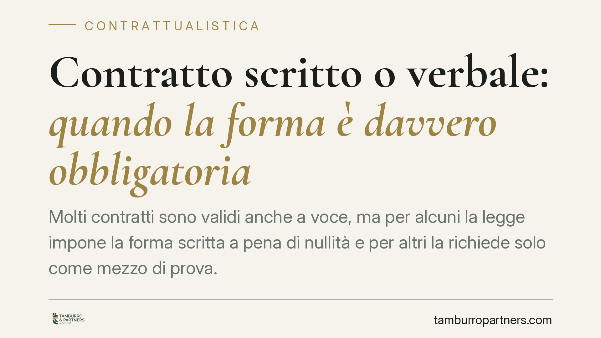

Contratto scritto o verbale: quando la forma è davvero obbligatoria
Molti contratti sono validi anche a voce, ma per alcuni la legge impone la forma scritta a pena di nullità e per altri la richiede solo come mezzo di prova. Confondere i due piani espone a rischi concreti: dall'immobile che non passa di proprietà al credito che non si riesce a dimostrare in giudizio. Ecco come orientarsi.

Il principio: libertà di forma, con eccezioni
Nel nostro ordinamento vige la regola della libertà di forma. Un contratto è di norma valido anche se concluso verbalmente, purché ricorrano gli elementi essenziali indicati dall'art. 1325 c.c.: accordo delle parti, causa, oggetto e — quando prescritta dalla legge — la forma.
È proprio l'ultimo elemento a generare i maggiori equivoci. La "forma" non ha sempre lo stesso peso: in alcuni casi serve a rendere valido il contratto, in altri serve soltanto a poterlo dimostrare. Sono due piani diversi, con conseguenze molto diverse.
Forma ad substantiam: senza scrittura il contratto è nullo
La forma è richiesta *ad substantiam* (per la validità) quando la sua mancanza rende il contratto nullo. L'elenco principale è nell'art. 1350 c.c. Vi rientrano, tra gli altri:
- i contratti che trasferiscono la proprietà di beni immobili;
- i contratti che costituiscono o modificano diritti reali (usufrutto, servitù, ipoteca);
- le locazioni di immobili per un tempo eccedente i nove anni (art. 1350 n. 8 c.c.).
Un discorso a parte merita la donazione: non basta la forma scritta. L'art. 782 c.c. impone l'atto pubblico a pena di nullità, salvo il caso della donazione di modico valore avente per oggetto beni mobili.
La nullità per difetto di forma è particolarmente insidiosa: è rilevabile d'ufficio dal giudice e può essere fatta valere da chiunque vi abbia interesse. In pratica, il contratto non produce alcun effetto.
Forma ad probationem: il contratto vale, ma va provato
Diversa è la forma richiesta *ad probationem* (per la prova). Qui il contratto è pienamente valido anche senza scrittura, ma la legge limita i mezzi con cui può essere dimostrato in giudizio.
È il caso del contratto di assicurazione (art. 1888 c.c.) e della transazione (art. 1967 c.c.): la forma scritta serve a provarne il contenuto, non a renderli validi. Se manca la prova documentale, l'art. 2721 c.c. limita l'ammissibilità della prova testimoniale.
La conseguenza è meno drastica della nullità, ma altrettanto concreta: chi non dispone del documento rischia di non riuscire a far valere i propri diritti in causa. Il limite, però, va eccepito dalla controparte e non è rilevabile d'ufficio.
Atto pubblico o scrittura privata?
Quando la forma scritta è richiesta, non tutti i documenti hanno lo stesso valore.
L'atto pubblico (artt. 2699-2700 c.c.) è redatto da un notaio o altro pubblico ufficiale e fa piena prova, fino a querela di falso, della provenienza e dei fatti che il pubblico ufficiale attesta come avvenuti in sua presenza.
La scrittura privata (art. 2702 c.c.) fa piena prova della provenienza delle dichiarazioni se la sottoscrizione è riconosciuta o legalmente considerata tale. È lo strumento più diffuso, ma offre una tutela probatoria inferiore rispetto all'atto notarile.
Firma digitale, PEC e forma scritta
Sul digitale occorre chiarezza. La PEC garantisce data certa e provenienza del messaggio, ma di per sé non equivale alla forma scritta ad substantiam. L'equivalenza con la scrittura richiede una firma elettronica qualificata o digitale, ai sensi degli artt. 20 e 21 del Codice dell'Amministrazione Digitale (D.Lgs. 82/2005) e del Regolamento eIDAS. Inviare un documento non firmato tramite PEC, quindi, non soddisfa il requisito formale per i contratti dell'art. 1350 c.c.
Perché conta nella pratica
Gli effetti sono immediati. Chi acquista un immobile con un accordo verbale non ne diventa proprietario: senza atto scritto il trasferimento è nullo. Chi affida un appalto rilevante senza formalizzarlo può veder riconosciuto il rapporto, ma fatica a dimostrarne l'esatto contenuto in caso di lite.
Un'attenzione particolare riguarda banche e investitori: i contratti bancari devono essere redatti per iscritto a pena di nullità (art. 117 TUB) e lo stesso vale per i contratti di intermediazione finanziaria con la clientela (art. 23 TUF). In questi settori la forma scritta è presidio di trasparenza e tutela del cliente.
Cosa fare in concreto
- Verifica la categoria del contratto: se rientra nell'art. 1350 c.c., predisponi sempre l'atto scritto.
- Per le donazioni, rivolgiti al notaio: serve l'atto pubblico, salvo il modico valore.
- Conserva la documentazione anche quando la forma non è imposta: eviti problemi di prova.
- Per i contratti digitali, usa la firma qualificata o digitale, non la sola PEC.
- Nei rapporti bancari e finanziari, pretendi copia del contratto scritto: è un tuo diritto.
Contributo informativo a cura di Tamburro & Partners - Avv. Giuseppe Tamburro. Non costituisce parere legale.
Ogni contratto ha il suo equilibrio.
Se vuoi una revisione delle clausole o una redazione su misura, scrivi allo studio. Ti rispondiamo entro un giorno lavorativo.